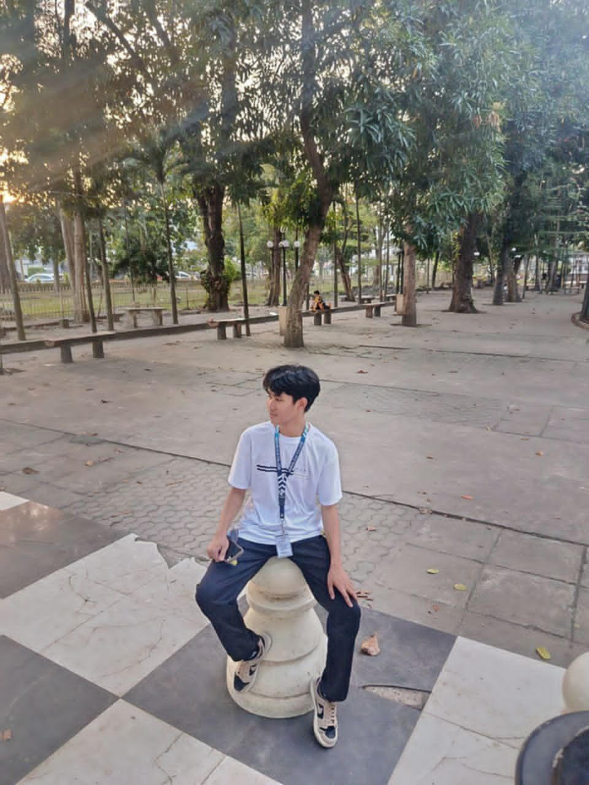

About Me
Get to know a bit more about who I am
👋 Self Introduction

Hello! I'm Marnel Castillanes, a 2nd year BS Information Technology student who is passionate about web development and exploring how cloud computing makes technology more accessible. I enjoy building things from simple static pages to fully deployed, live websites and this project marks my first hands-on experience deploying a site to the cloud.
- Full NameMarnel Castillanes
- CourseBS Information Technology
- Year Level2nd Year
- FocusWeb & Cloud Deployment
🛠️ Skills
My Journey
Milestones along the way
Started IT Studies
Began my BS Information Technology program, discovering an interest in programming and systems.
Learned Web Fundamentals
Studied HTML, CSS, and JavaScript to build interactive, responsive websites.
Explored Cloud Computing
Learned core cloud concepts — hosting, deployment pipelines, and public accessibility.
Deployed First Website
Successfully published this portfolio site to a live cloud hosting platform. 🚀